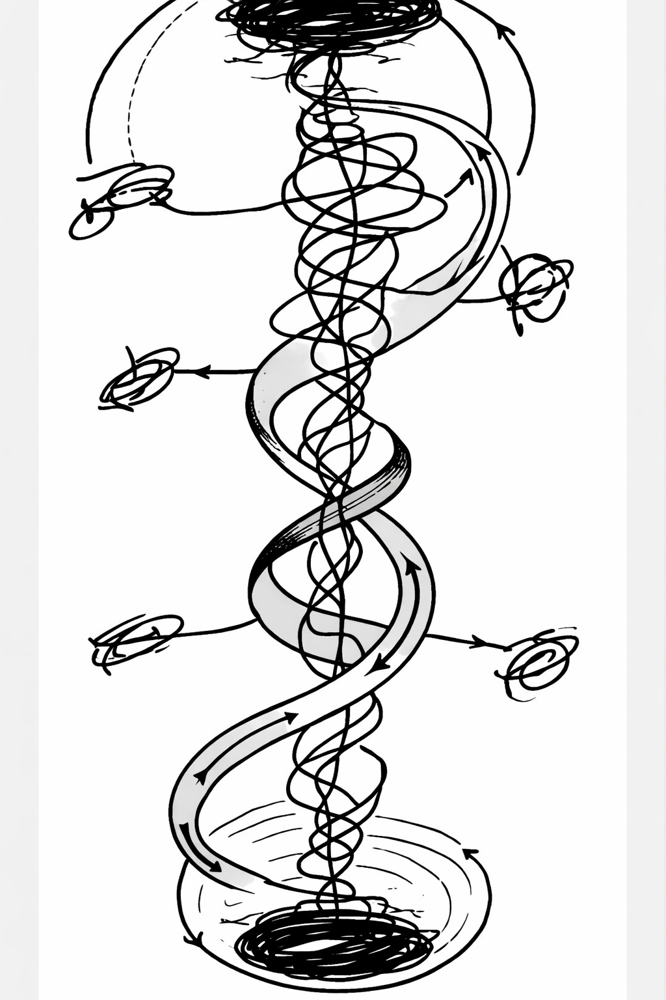

I. The Cosmic Geometry
[span_4](start_span)[span_5](start_span)Reality is not a circle; it is a Mobius strip[span_4](end_span)[span_5](end_span). [span_6](start_span)[span_7](start_span)Existence is a continuous surface where birth and death are merely the twist point where the surface inverts[span_6](end_span)[span_7](end_span).
 [span_8](start_span)Fig 1: The Spiral Motion of the Mobius Surface[span_8](end_span)
[span_8](start_span)Fig 1: The Spiral Motion of the Mobius Surface[span_8](end_span)
II. The Inter-Universal Relay
[span_9](start_span)Our universe sits between a white hole delivery event and a future black hole compression event[span_9](end_span). [span_10](start_span)[span_11](start_span)[span_12](start_span)Black holes refine conscious energy into dark matter, the carrier of the next evolutionary update[span_10](end_span)[span_11](end_span)[span_12](end_span).

[span_13](start_span)Fig 2: The Transmission Logic of Information-Density[span_13](end_span)III. Biological Integration
[span_14](start_span)[span_15](start_span)[span_16](start_span)Evolution is not random; it is an update cycle activated by sunlight and Vitamin D synthesis, bonding dark matter data to DNA one generation at a time[span_14](end_span)[span_15](end_span)[span_16](end_span).
 [span_17](start_span)Fig 3: The Complete Inter-Universal Relay[span_17](end_span)
[span_17](start_span)Fig 3: The Complete Inter-Universal Relay[span_17](end_span)